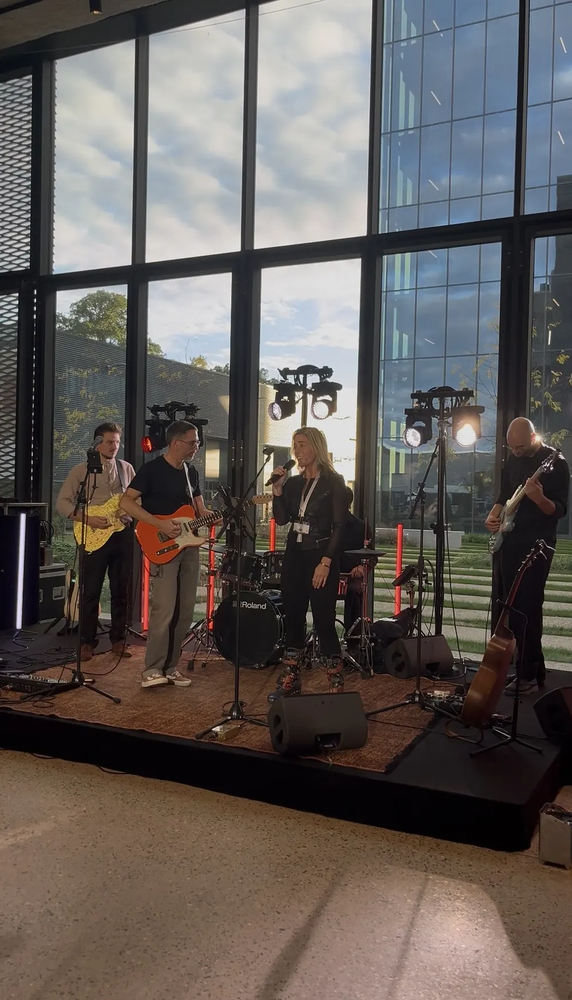
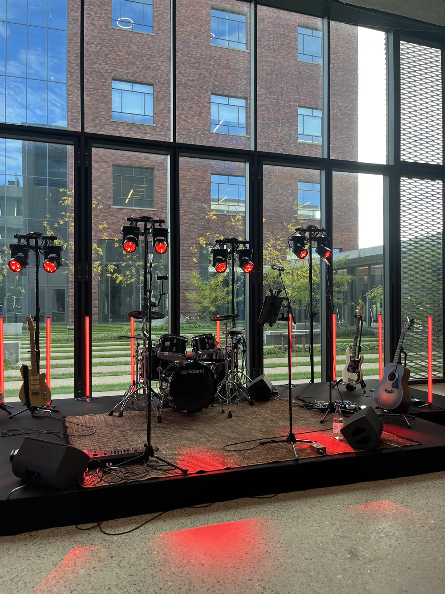

Pour vos équipes,Un moment fort : groupe live pour soirées et événements d'entreprise
Soirées d'entreprise, séminaires, congrès, grandes scènes : JamBag fait vivre à vos équipes un live qui rassemble. Groupe basé à Lille, partout en France.
Quatre façons deRassembler
Une soirée réussie, c'est une soirée où tout le monde participe.
Notre signature
Le show JamBag
Un concert pensé pour vos invités.
Une setlist construite pour que l'énergie monte sans temps mort, des tubes intemporels en français et en anglais, et un public invité à chanter du premier au dernier titre.
Quartet, ou grande formation sur mesure
La jam d'entreprise
Faites participer vos collaborateurs.
Le groupe ouvre et lance l'ambiance, puis invite vos équipes à monter sur scène. Vos musiciens prennent la basse ou la guitare, les plus timides montent à cinq pour chanter un refrain. Nos musiciens accompagnent tout le monde en direct, Carl anime. Pas de karaoké : du vrai live, spontané.
En amont : on recense qui veut jouer quoi, et les instruments sont prévus.
Le blind test live
Le groupe joue, vos équipes devinent.
Un jeu musical joué en direct et animé par Carl. Les équipes s'affrontent sur les premières notes, puis toute la salle chante le refrain. Ludique, fédérateur, parfait pour briser la glace.
Idéal pour une soirée d'équipe ou un séminaire
La pause acoustique
Une heure pour chanter ensemble.
Un midi ou en fin de journée, en guitare-voix ou en duo cajon. Un petit système son, des micros qui circulent, et tout le monde chante, sans prise de tête. Un rendez-vous simple à organiser, ponctuel ou régulier, qui rapproche les équipes.
Solo ou duo, une heure, dans vos locaux
Ils nous ont fait confiance
La jam d'entreprise,En vrai
Gand, une salle vitrée, la technique en place. Et ceux qui montent sur scène ne sont pas toujours ceux qu'on attendait.


Nos formules,Pour les entreprises
Tarifs de départ pour deux heures de live, sono incluse. Chaque événement est unique : votre devis est établi sur mesure.
Solo guitare-voixdès 1 351 € HT
Duo acoustiquedès 1 782 € HT
Triodès 2 796 € HT
Quartet, avec ingénieur du sondès 4 626 € HT
Grande formation, jam d'entreprise, pause acoustiquesur devis
« Les clients ont tellement aimé qu'ils ont réclamé la même chose cette année ! C'est pro, ça groove, ça chante bien, les musiciens sont sympas et faciles. »
« Groupe musicalement et humainement très convivial et professionnel. Je recommande à 200 % pour une soirée à coup sûr réussie. »
« C'est la deuxième fois que je les sollicite et le résultat est unanime : extraordinaire. Ce groupe est une valeur sûre. »
CommentÇa se passe
Un premier appel
Carl échange avec vous sur l'événement, le public, le lieu et le déroulé.
Une proposition
Format, formation, technique : une proposition claire et un devis.
La préparation
Fiche technique, timing, recensement des participants pour une jam : tout est calé.
Le jour J
Nous arrivons en moyenne trois heures avant et nous intégrons à votre programme. Vos équipes n'ont plus qu'à profiter.
Besoin d'un document à faire valider en interne ? Notre plaquette entreprise vous est envoyée sur simple demande.